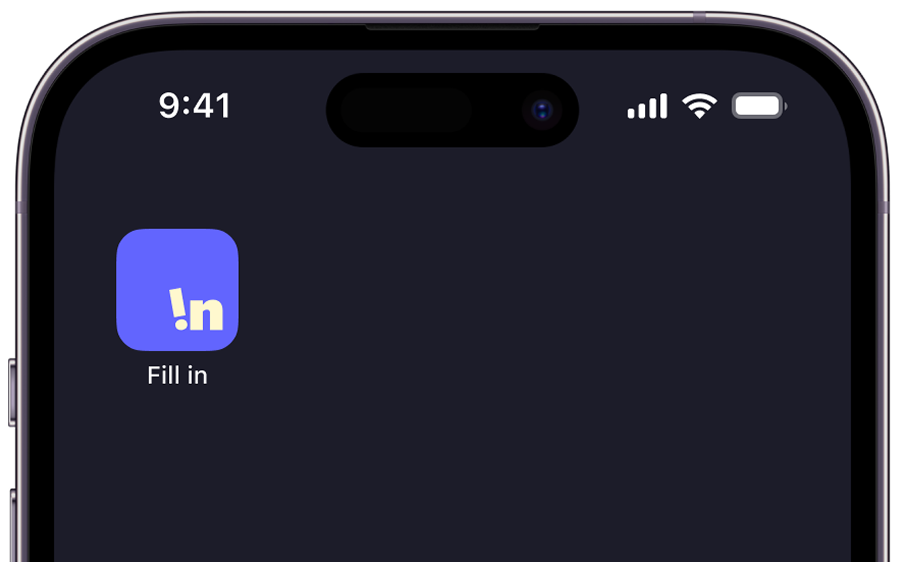
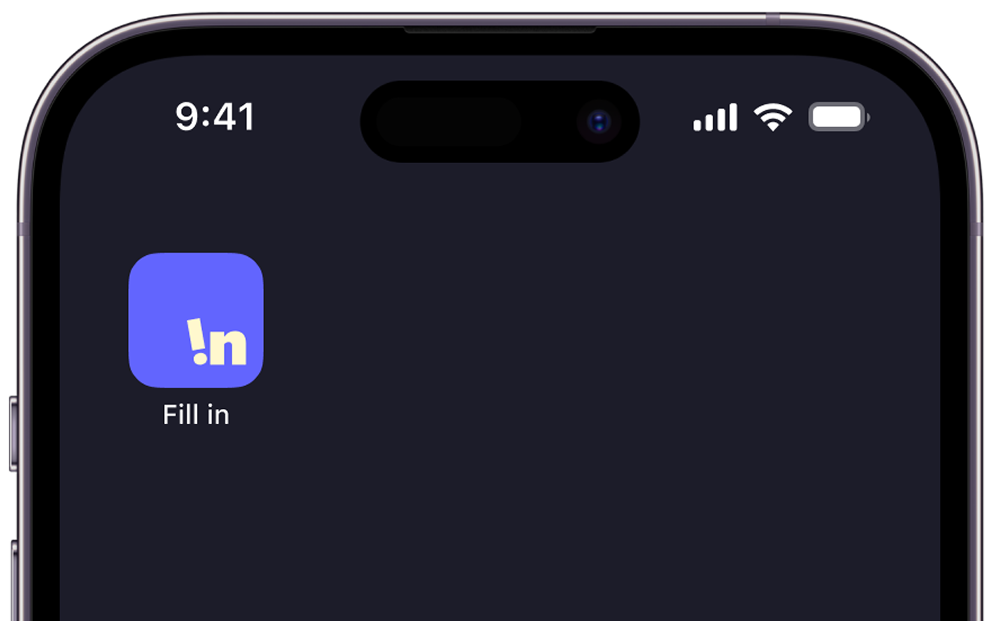

ABOUT
F!lln® 은 경계선 지능 청년이 권리의 공백을 메우고,
사회적 연결을 통해 주체성을 확장해 가는 여정을 담은 브랜딩 프로젝트 입니다.
Interview
F!lln® 은 실제 경계선 지능 청년분들의 실제 목소리를 담았습니다.
그들이 실제 겪는 어려움을 가까이에서 듣고, 해결하기 위해 다양한 방안을 고려해 진행된 프로젝트입니다.
Functions
이곳에 Functions 관련 콘텐츠가 들어갑니다.
Contact Us
이곳에 Contact Us 관련 콘텐츠가 들어갑니다.